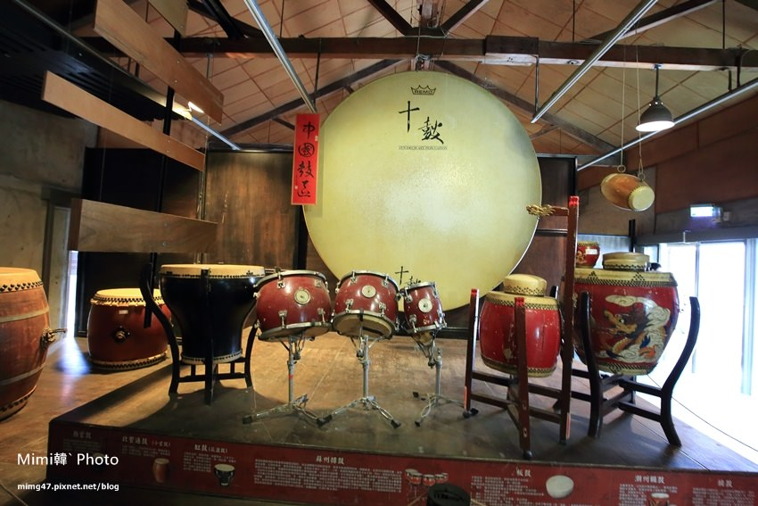

景點介紹 十鼓仁糖文化園區前身就是仁德糖廠，糖產業漸漸轉型之後，廠內的建築也就跟著荒廢了一段歲月，而後來因為有了台灣著名的”十鼓擊樂團“進駐練習，漸漸轉變成如今以”鼓“為主題的景點，很有自己的特色。 十鼓仁糖文化園區票價：450元(全票)雖然有點貴蠻貴，但因為園區規劃的很棒，有許多遊樂設施，門票也包含精彩的十鼓擊樂團現場演出，我是覺得還是很值得來玩。另外十鼓仁糖文化園區星光票雖然會比較便宜，但很多設施晚上會保養維護不能玩。  瀏覽器不支援